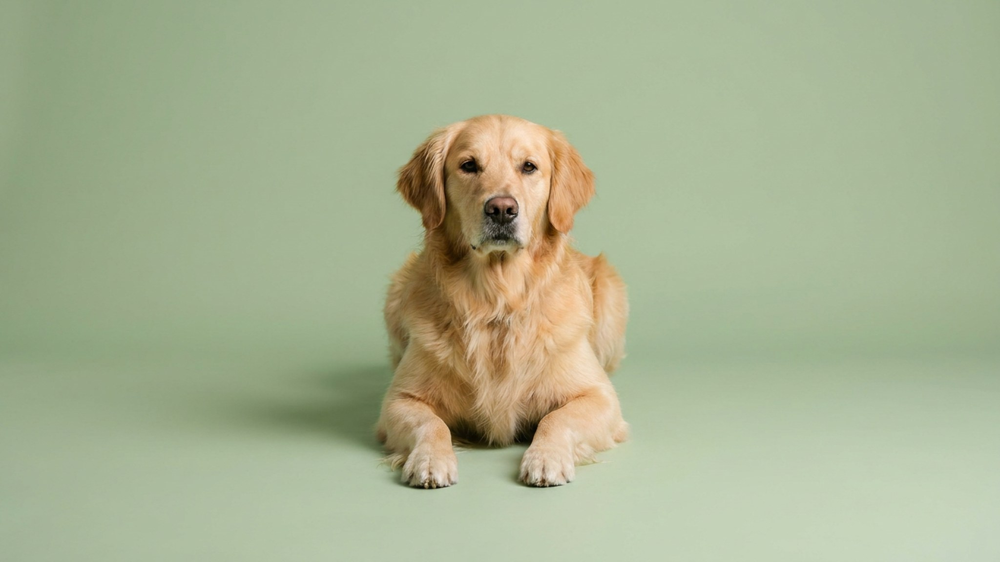

Кошка ест, играет, мурлычет — и хозяин уверен, что к врачу пока незачем. Но и кошки, и собаки — потомки животных, которым выгодно не показывать слабость: недомогание они скрывают до последнего. К моменту, когда перемены заметны со стороны, процесс часто идёт давно. Ежегодный визит нужен именно затем, чтобы не полагаться на «вид здоров». Разбираем, что он даёт и как сделать его не формальным.
🐾 Первая помощь — всегда под рукой
AnimaLife подскажет, что делать в тревожной ситуации с питомцем ещё до визита к врачу. Откройте в один тап.
Питомец не жалуется словами, а инстинкт подсказывает ему держаться бодро даже когда что-то не так. Аппетит и активность могут сохраняться, пока перемены накапливаются незаметно. Регулярный осмотр помогает поймать сдвиги на раннем этапе — когда сделать что-то проще, дешевле и спокойнее, чем в запущенной ситуации.
Отдельно это важно для животных старше 7 лет: у них многое меняется быстрее, и один визит в год иногда стоит заменить на два — как часто, решает ветеринар.
Плановый приём — это не только прививка. За один визит врач обычно:
Чтобы приём был полезным, придите с фактами, а не общими словами. Врачу помогает, если вы заранее отметите:
Ежегодный осмотр не отменяет внепланового. Если заметили резкую перемену — питомец стал вялым, отказывается от еды и воды, прячется, ведёт себя нехарактерно, — это повод показать его врачу, не дожидаясь даты. Наблюдать неделями «само пройдёт» — как раз тот случай, когда теряется ранний момент.
🐾 Экономьте на лишних визитах к врачу
Сначала спросите AI-ветеринара в AnimaLife — часто этого достаточно, чтобы понять, нужен ли визит к врачу.
🐾 Понравился разбор?
Подпишитесь на канал — каждый день разбираем по одному тревожному симптому у кошек и собак: что в пределах нормы, а когда пора к врачу. Подпишитесь, чтобы не пропустить разбор, который может спасти здоровье вашего питомца.
Раз в год — небольшая инвестиция времени, которая работает на годы жизни рядом. Здоровому питомцу этот визит подтверждает, что всё в порядке; а если что-то начинается — даёт фору. Точный план осмотров и профилактики подберите со своим ветеринаром.
Материал носит информационный характер и не заменяет очную консультацию ветеринара.